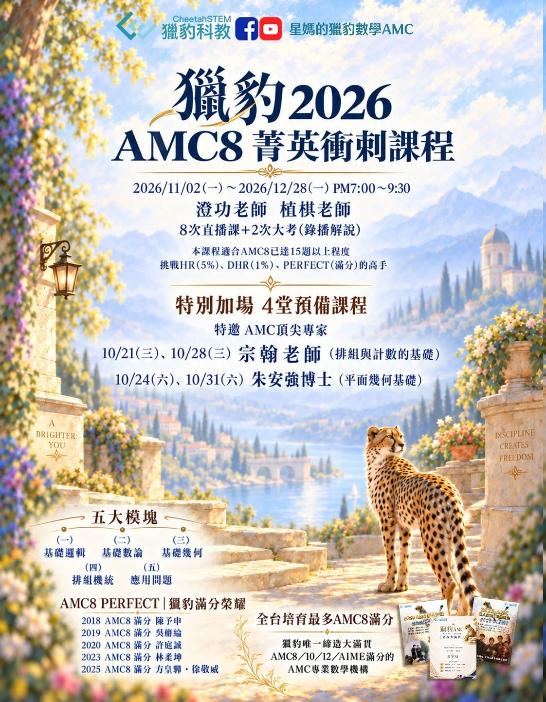

『2026 AMC8全新衝刺班，開跑！』
・8堂主題直播正課
・2次系統大考＋2次錄播講解
・可另外加購4堂預備直播課
全新課程內容，與去年不重複，歡迎舊生再次參加！
【課程編號】
2610A8prep 2026 AMC8考前衝刺班
【適合對象】
適合目前AMC8約可答對15題以上，希望進一步挑戰HR（前5%）、DHR（前1%）或Perfect Score（滿分）的學生。
一、超修國中數學的資優小學生
以進入熱門私中為目標，並希望進入私中後持續維持優勢、名列前茅。
以未來挑戰科學班、數資班為目標。
二、七、八年級校內數學成績位於前端的學生
希望突破段考中的高鑑別度難題，穩定取得高分。
以進入明星高中或校內直升為目標，並希望進入高中後繼續保持優勢、名列前茅。
三、八年級以下數理資優生
希望在AMC8取得高分，挑戰HR（前5%）或DHR（前1%）。
希望提早進入大學開設的「高中人才培育課程」。
【獵豹AMC課程特色】
獵豹的教學，不只用知識點架構學習，例如多項式、幾何、排列組合與機率；更重視科學方法、分析能力與思維模式的建立，例如歸納、演繹、對稱性、極端化等。
獵豹AMC的「專家模式」訓練，不以大量刷題為目標，而是透過精選題目，帶領學生理解：
面對陌生題目，第一步如何開始？
如何從題目條件中找出關鍵關係？
如何選擇更有效率的解題路徑？
如何把學過的知識，轉化成真正能運用的解題工具？
我們希望培養的，不只是競賽分數，更是學生的深度思考、數學素養與解決問題的能力。
【八堂主題直播正課】
授課老師：澄功老師、植棋老師
上課時間：19:00～21:30（每堂2.5小時，共8堂直播正課）
11/2（一）｜邏輯｜澄功老師
11/9（一）｜排列組合（一）｜植棋老師
11/16（一）｜排列組合（二）｜植棋老師
11/23（一）｜幾何｜澄功老師
12/7（一）｜數論（一）｜植棋老師
12/14（一）｜數論（二）｜植棋老師
12/21（一）｜應用問題｜澄功老師
12/28（一）｜機率｜植棋老師
※若講義中的原題為英文，授課老師將以中文翻譯並講解。
【兩次系統大考＋錄播講解】
第一次系統大考：11/30（一）｜澄功老師錄播講解
第二次系統大考：2027/1/4（一）｜植棋老師錄播講解
每次系統大考均搭配約60分鐘的錄播講解。
【特別加開｜四堂預備直播課】
為尚未完整學過國中階段排列組合、計數或平面幾何的同學，特別邀請兩位AMC專業師資，在衝刺正課開始前開設4堂預備直播課，補足重要的先備知識（不可單獨購買加開課）。
排列組合與計數基礎｜宗翰老師
10/21（三）、10/28（三）19:00～21:30
平面幾何基礎｜朱安強博士
10/24（六）、10/31（六）09:30～12:00
※以上4堂皆為直播課，每堂2.5小時；為加購課程，不包含在AMC8衝刺正課內。
【課程單元】
AMC8由美國數學協會MAA主辦，考題新穎靈活，重視學生的邏輯推理、數學思維及臨場解題能力。獵豹AMC8衝刺課程完整涵蓋五大模塊：
（一）基礎邏輯
（二）基礎數論
（三）基礎幾何
（四）排列組合與機率
（五）應用問題
許多家長看到這些單元名稱，可能會以為孩子「都學過了」。但「學過」不等於「會用」。在獵豹課程裡，學生將進一步學習：
如何把熟悉的知識，轉化成AMC8解題武器。
如何快速辨識題目陷阱，找到更有效率的解法。
如何在限時環境下保持思路清晰，兼顧速度與準確度。
如何面對沒有看過的題目，分析條件並找到第一步。
這份能力，不只能幫助學生在AMC8脫穎而出，也能延伸到未來的段考、大考及各類高鑑別度數學題目，成為升學路上真正帶得走的實力。
【作業與課程服務】
贈送練習題本（AMC8歷屆試題，或同等級練習題本；若遇出版社缺書，將改贈同等程度的練習題本）。
課程將成立專屬班群。
全程參與本課程的學生，可觀看正課回放至2027/1/31。
【費用】
正式課程（8堂主題直播課＋2次系統大考＋2次錄播講解）：定價NT$12,800／人
4堂預備課程：定價NT$4,000／人
正式課程優惠（a、b兩類可合併使用）
a. 早鳥優惠：2026/10/14前完成報名，減免NT$500／人。
b. 分享文優惠（名額有限）：於FB貼文按讚並留言「獵豹AMC8＋1」、私訊星媽「孩子姓名＋報名AMC8衝刺課」，依說明加入獵豹官方LINE並公開分享FB指定文章，可減免NT$1,200／人。
完成分享文任務後，還可再依學生身分享有以下一項舊生優惠：
（1）獵豹P、J、S在班生，減免NT$1,800／人。
（2）獵豹各地實體合作課在班學生，或參加過2026暑假AMC8實體課程的學生，減免NT$1,000／人。
（3）曾參加過獵豹課程的一般舊生，減免NT$500／人。
預備課程：2026/10/14前完成加購報名，可享早鳥減免NT$500／人。
【報名方式】
一、首次報名獵豹課程者，請先填寫「TC01新生資料表」。
二、所有報名者皆須填寫「2026 AMC8衝刺班課程報名單」。
報名表連結見FB原文；建議使用電腦填寫。
完成報名後，班主任將依報名時間通知入班。早鳥期間完成報名者，將於開課前3天邀請學生及家長加入班群；非早鳥期間完成報名者，將於報名後3個工作天內邀請加入班群。
